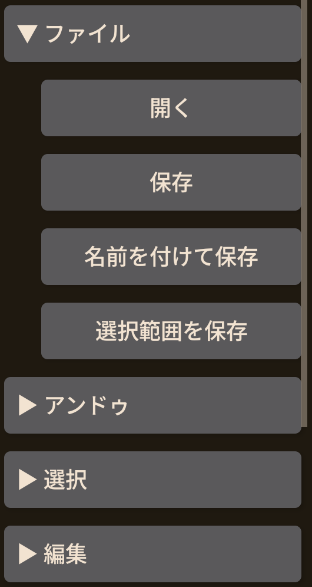

コマンドボタン部
コマンドボタン部には、音声ファイルの読み書きや各種編集コマンドを実行するためのボタンが、折り畳みできる 7 つのグループ に分かれて縦に並んでいます。

グループの開閉
- 各グループの見出しボタンを押すと、そのグループが開閉します（開いているときは
▼、畳んでいるときは▶が付きます）。 - アプリ起動時は「ファイル」グループだけが開いており、他のグループは畳まれています。
- 開閉状態は画面の向きを変えても維持されます（アプリ終了時やライト／ダークモード切り替え時は初期状態に戻ります）。
- 一覧が画面に収まらないときは縦にスクロールできます。見切れに気づきやすいよう、スクロールバーは常に表示されます。
グループ一覧
| グループ | 含まれるコマンド | 詳細 |
|---|---|---|
| ファイル | 開く / 保存 / 名前を付けて保存 / 選択範囲を保存 | 詳細を見る |
| アンドゥ | 元に戻す / やり直す | 詳細を見る |
| 選択 | 無音区間を選択 / 発音区間を選択 | 詳細を見る |
| 編集 | トリム / カット / コピー / 貼り付け / 挿入 / 末尾に追加 | 詳細を見る |
| 選択範囲の加工 | 音量の変更 / 音量の最大化 / 無音化 / フェードイン / フェードアウト / 位相反転 / 逆再生 / チャンネル入れ替え | 詳細を見る |
| 全体の加工 | 音程の変更 / サンプリングレートの変更 / 再生レートの変更 / チャンネル数の変更 | 詳細を見る |
| 音の追加 | 音のミックス / 音の挿入・追加 | 詳細を見る |
コマンド実行時の共通仕様
ボタンの有効・無効
- 音声データを開いていないときは、「ファイル」グループの 開く と各グループの見出しボタンだけが使えます。
- 履歴がないときの 元に戻す・やり直す、コピーバッファが空のときの 貼り付け・挿入・末尾に追加、モノラル音声編集中の チャンネル入れ替え などは自動的に無効（グレー表示）になります。
バックグラウンド処理とキャンセル
- 編集コマンドを押すと、再生中の場合は自動的に停止します。
- 編集処理はバックグラウンドで実行され、実行中は画面操作を受け付けません。
- 処理に 2 秒以上かかる場合は「処理しています…」ダイアログに進捗バーと %、および キャンセル ボタンが表示されます。キャンセル を押すと、音声データ・履歴・コピーバッファを変更せずに中止できます。
ダイアログの前回値の記憶
- パラメータを指定するダイアログでは、前回実行したときの値がアプリ終了まで記憶され、次回開いたときの初期値になります（キャンセル で閉じた場合は記憶しません）。
- 「変換方法（サンプリングレート変換アルゴリズム）」は、音程の変更・サンプリングレートの変更・音のミックス・音の挿入・追加の間で共通して記憶されます。
- 音量（dB）や音程差（半音）の入力欄は小数も入力できます。その下のスライダーは 1 刻みの整数で調整でき、入力欄と連動します。